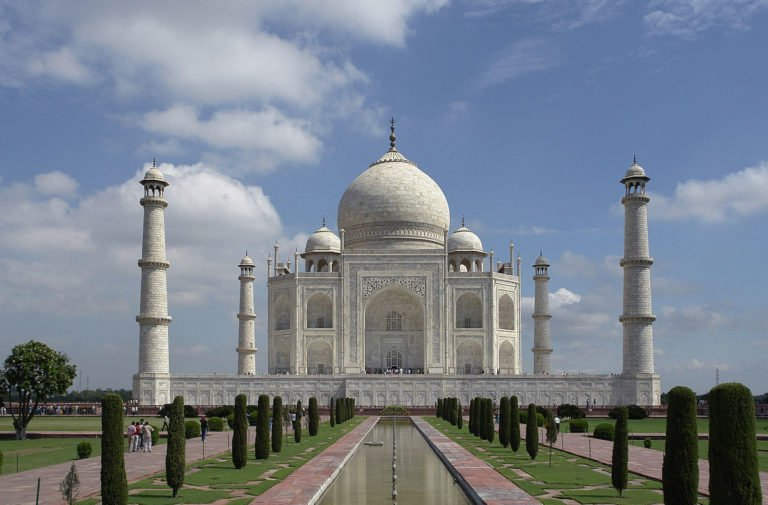
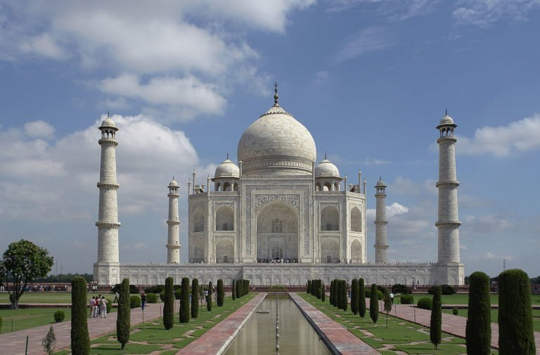

.
The Golden temple is the holiest shrine of Sikhs. It was built in late 16th century and a copy of the Sikh scripture was placed inside the temple in 1604. Its sanctum walls were covered in marble and the dome was decorated with gold foil in the 19th century. More than 100,000 people visit every year. The temple is in the city of Amritsar, Punjab, India. The temple is surrounded by a sacred pool and group of buildings important to the Sikh religion. The complex is the most important pilgrimage site in Sikhism. Another building is the langar, where a free simple vegetarian meal is served to all without any discrimination. The temple is a place of worship for men and women from all walks of life and all religions to come and worship God. The four entrances (representing the four directions) to get into the Harmandir Sahib also symbolise the openness of the Sikhs towards all people and religions.
 

The Taj Mahal meaning "Crown of the Palaces")[5] is an ivory-white marble mausoleum on the south bank of the Yamuna river in the Indian city of Agra. It was commissioned in 1632 by the Mughal emperor, Shah Jahan (reigned from 1628 to 1658), to house the tomb of his favourite wife, Mumtaz Mahal. It also houses the tomb of Shah Jahan, the builder. The tomb is the centerpiece of a 17-hectare (42-acre) complex, which includes a mosque and a guest house, and is set in formal gardens bounded on three sides by a crenellated wall.